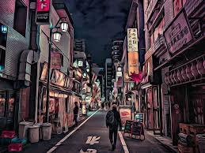

To me digital art serves two functions as both an imaginative outlet and a method to materialize my imagination through art. My freedom to experiment grows unrestricted through digital art since it differs from traditional drawing methods that present challenging mistake repairs. The endless tools and colors enable me to make every digital artwork an exciting journey when sketching character designs or constructing landscapes or simply drawing for entertainment.
The ability to create art through digital media stands out to me because it enables me to develop various artistic expressions. The mood shifts between producing elaborate realistic artwork and creating basic abstract pieces throughout my day. The ability to work with adjustable layers together with easy color blending maintains an exciting process that grows with each attempt.
The practice of digital art allows me to achieve relaxation through its creative process. This form of self-expression gives me freedom to build ideas without being under pressure. Every artwork that I pursue through digital art methods offers me new educational experiences whether I am creating to gain skill improvement or simply for pleasure. Digital art stands as a deep passion to which I continue adding new skills through all of my drawing actions.
